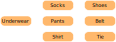
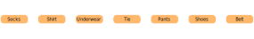
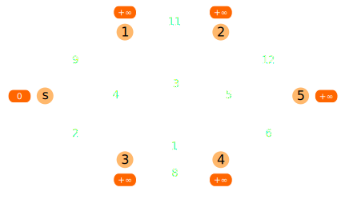
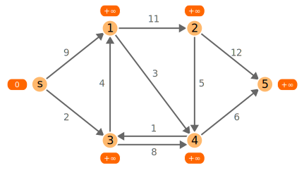
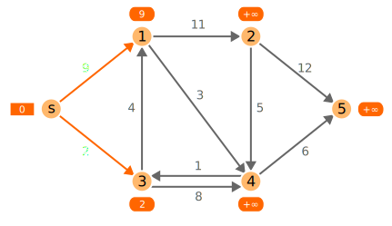
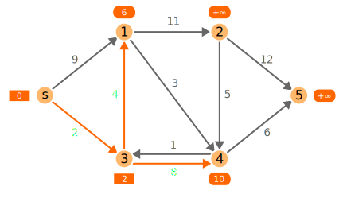
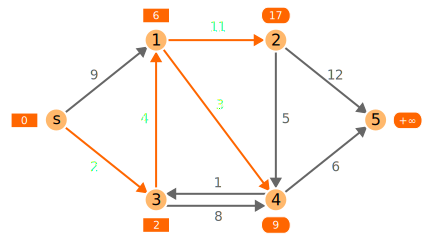
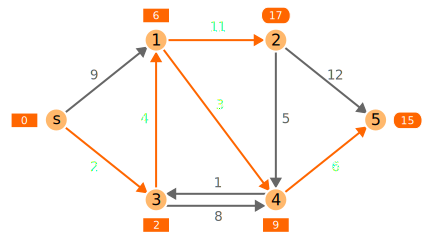
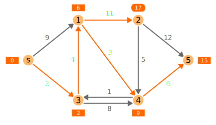
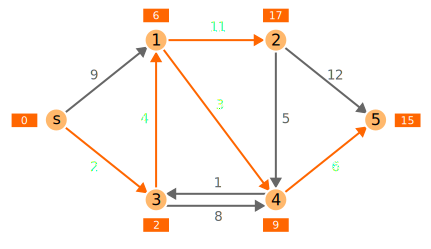

CS3460: Data Structures & Algorithms
Graphs & Connectivity
Graphs (Networks)
- A graph is a collection of nodes (aka, vertices) and edges. Each edge joins a pair of vertices. Nodes and edges can have weights/costs.
- Graphs can be directed or undirected, referring to whether or not the edges have a direction. By default, "graph" usually means "undirected graph."
- Graphs are very common data structures because they are extremely useful at modeling a wide range of problems and applications.
Graph Examples

Graph Topology
There are many special types of graphs. The following are examples of special cases we might encounter:
Path ($P_n$)
Cycle ($C_n$)
Graph Topology
There are many special types of graphs. The following are examples of special cases we might encounter:

Complete graph ($K_n$)

Planar graph
Graph Topology
There are many special types of graphs. The following are examples of special cases we might encounter:

Bipartite graph (a complete bipartite graph is denoted $K_{m,n}$)
Graph Terminology
- A walk is a series of nodes connected by edges.
- We can think of a walk as a sequence of edges.
- Commonly interested in directed walks in a digraph.
- A path is a "simple" walk (visits no nodes twice).
- A cycle is a path that starts and ends at the same node.
- A connected component is a set of nodes that are joined by paths.
- In a digraph, a strongly connected component is a set of nodes for which all pairs of nodes $i,j$ in that set have a path leading from $i$ to $j$ and from $j$ to $i$.
Some Classical Graph Problems
Shortest Paths
- Problem: Find the shortest path between two nodes in a graph.
- We can also find the shortest path between one node and all other nodes [referred to as single-source shortest path].
- We can also find the shortest path between all pairs of nodes [referred to as all-pairs shortest path].
Minimum Spanning Trees
- Problem: Find a min-cost subset of edges that connects all nodes.

Minimum Spanning Trees
- Problem: Find a min-cost subset of edges that connects all nodes.
Matchings
- Problem: Pair up as many nodes as possible, or pair all nodes at minimum total cost.
Matchings
- Problem: Pair up as many nodes as possible, or pair all nodes at minimum total cost.
Flow / Routing
- Problem: Route a maximum amount of some commodity through a capacitated network, possibly at minimum total cost.
Network Analysis / Data Mining
- Similarity / Connectivity: How similar are nodes $x$ and $y$ if edges connect directly-related elements?
- Clustering: Does a graph break naturally into several large "clusters"?
- Centrality: Find nodes that are well-connected with all other nodes.
Network Analysis / Data Mining
Graph Representations
An adjacency matrix (ideal for dense graphs)

1 2 3 4
+--------
1 | 0 1 0 0
2 | 0 0 1 0
3 | 1 0 0 1
4 | 0 0 1 0
Graph Representations
An adjacency list (ideal for sparse graphs)

1: 2 3
2: 1 3 4
3: 1 2 4 5
4: 2 3 5
5: 3 4
Unless otherwise stated, we will assume our graphs are represented using adjacency lists.
Simple Connectivity Questions
- Some of the most fundamental graph questions related to connectivity:
- Are nodes $i$ and $j$ connected by some path?
- If so, determine such a path.
- In a digraph, is there a directed path from $i$ to $j$?
- Does a (directed) graph have a (directed) cycle?
- Partition a graph into its connected components.
- Partition a digraph into its strongly connected components.
Depth-First Search (DFS)
dfs_visit(i):
visited[i] = True
for each j such that (i,j) is an edge:
if visited[j] is False:
predecessor[j] = i
dfs_visit(j)
full_dfs():
for each i: predecessor[i] = null, visited[i] = False
for each i: if visited[i] is False: dfs_visit(i)
- Works in directed and undirected graphs.
- full_dfs() takes $O(m + n)$ — spends $O(1)$ on each node and edge
Depth-First Search (DFS)

Depth-First Search (DFS)

Depth-First Search (DFS)
- full_dfs() gives us an easy way to partition an undirected graph into its connected components.
- The predecessor pointers define what is called a depth-first search tree.
- To find a path from $i$ to $j$ (if such a path exists):
- Initialize predecessor and visited values for all nodes.
- Call dfs_visit(i).
- Follow predecessor pointers backwards from $j$ to $i$
- How could we use this to find a path between any two nodes with only one call to full_dfs()?
Depth First Search in Practice
The Wolf, the Goat, and the Cabbage Problem
Topological Sorting
- A common type of graph is the Directed Acyclic Graph (DAG).
- As the name implies, this is a digraph that contains no cycles.
- Often used to model systems with precedence constraints.
- Topological sorting is the process of ordering the nodes of a DAG so that all edges point in a consistent direction. You can think of this as "flattening" the DAG into a sequence that satisfies the precedence constraints.
Topological Sorting
- There are several ways to topologically sort in $O(m + n)$ time:
- Find a node with no incoming edges. Add it next to the ordering, remove it from our graph, and repeat.
- If we ever find that every node has an incoming edge, then our graph must contain a cycle (this gives un an alternate way of performing cycle detection).
- Depth-first search gives us another very simple topological sorting algorithm.
Topological Sorting
 Topological Sorting
dfs_visit(i):
visited[i] = True
d[i] = current_time; increment current_time
for each j such that (i,j) is an edge:
if visited[j] is False:
predecessor[j] = i
dfs_visit(j)
f[i] = current_time; increment current_time
- Associate each node with a discovery time and a finishing time.
- To topologically sort a DAG, just perform full_dfs() and then output the nodes in reverse order of finishing times.
- Either output each node as soon as it is "finished," or sort the nodes by their finishing times (in linear time with counting sort) after the fact.
Topological Sorting
- Claim:In a DAG with an edge from node $i$ to node $j$, $f(i) > f(j)$.
- Proof: Consider two cases:
- full_dfs() visits $i$ first.
- full_dfs() visits $j$ first.
- In both cases, we have $f(i) > f(j)$ as long as our graph contains no directed cycles (which it doesn't, since it is a DAG!)
Shortest Paths
- Single-source, single-destination shortest path
- Find the shortest path from $s$ to $t$ in a (directed) graph.
- Can compute a single-source shortest path and then query $t$.
- Single-source shortest path
- Find the shortest path from $s$ to every other node in a (directed) graph.
- All-pairs shortest path
- Find the shortest path from every node to every other node in a (directed) graph.
Single-Source Shortest Paths
- There are several easy cases that we can solve in linear time:
- Unweighted graphs: use breadth-first search
- Directed acyclic graphs (DAGs): use dynamic programming
- Non-negative edge costs: use Dijkstra's algorithm
- Some negative edge costs: use Bellman-Ford algorithm
Breadth-First Search (BFS)
- Recall that depth-first search (DFS) dives as deeply as possible into a graph until it can't go any further, then branches upon backtracking.
- By contrast, a breadth-first search starting at some source node $s$ will visit $s$, then all nodes one step away from $s$, then all nodes two steps away from $s$, and so on until all nodes are reached.
- Like DFS, we can also use BFS to find connected components or answer "find a path from $i$ to $j$" queries.
- Unlike DFS, breadth-first search finds a path from $i$ to $j$ having the fewest edges.
Breadth-First Search (BFS)
bfs(s):
for all nodes i:
pred[i] = null
dist[i] = +inf
Q = {s}
dist[s] = 0
while Q is nonempty:
i = Q.remove()
for all nodes j for which (i,j) is an edge:
pred[j] = i
dist[j] = dist[i] + 1
Q.add(j)
If $Q$ is replaced with a stack instead of a FIFO queue,
this is just depth-first search!
Edges with Negative Cost
- If negative-cost edges exist:
- We need to use the $O(mn)$ Bellman-Ford algorithm.
- If there are negative-cost cycles present, there is no "shortest path."
- Bellman-Ford can detect negative cycles, fortunately.
- If the graph is undirected, a negative-cost edge is a negative-cost cycle.
- Longest path problems can be easily converted to shortest path by negating the edge lengths, so positive-cost cycles are problematic.
- Longest path problems are rarely tractable, since almost every graph has a positive-cost cycle. Except DAGs, of course...
Initializing Cost Labels
- Initially, all nodes have cost labels of $+\infty$, except the source, which has cost label $0$.
- The goal is to improve the cost labels of all the nodes so they reflect the cost of a shortest path.
Updating Cost Labels
- Shortest path costs satisfy the triangle inequality.
- $c[i] + \text{cost}(i, j) \ge c[j]$ for all edges $i,j$
Updating Cost Labels
If this is violated for some edge $(i,j)$, we can improve (tighten) the cost label of node $j$
tighten(i,j): // aka relax(i,j)
if c[i] + cost(i,j) < c[j]:
c[j] = c[i] + cost(i,j)
pred[j] = i
The Bellman-Ford Algorithm
bellman_ford():
for all nodes i: c[i] = +inf
c[s] = 0
repeat n-1 times:
tighten(i,j) for every edge i,j
if c[i] + cost(i,j) < c[j] for any edge i,j:
output "negative-cost cycle detected"
- No more linear time — Bellman-Ford runs in $O(mn)$ time ‚òπÔ∏è
- Computes single-source shortest paths in the presence of negative edge costs, and can detect negative cycles. üôÇ
- Proof of runtime by induction: after $k$ iterations of the main loop, each label $c[j]$ reflects the cost of the shortest $k$-hop path from $s$ to $j$.
Dijkstra's Algorithm
dijkstra():
for all nodes i: c[i] = +inf
c[s] = 0
Q = priority_queue(c)
while Q is nonempty:
i = Q.remove_min() // c[i] is locked
tighten(i,j) for all nodes j such that (i,j) is an edge
- Only works if edge costs are non-negative. Why?
- Running time depends on priority queue operations:
- $n$ inserts, $n$ remove-mins, and at most $m$ decrease-keys
- Using a binary heap, all these operations run in $O(\lg n)$ time, so $O(m \lg n)$.
Dijkstra's Algorithm
Step 1
Initialize all nodes have cost labels of $+\infty$, except the source, which has cost label $0$.
Dijkstra's Algorithm
Step 2
Examine the source node $s$, which will lock the value of node $s$ in permanently. Tighten all edges leaving node $s$.
Dijkstra's Algorithm
Step 3
Examine node $3$, which will lock the value of node $3$ in permanently. Tighten all edges leaving node $3$.
Dijkstra's Algorithm
Step 4
Examine node $1$, which will lock the value of node $1$ in permanently. Tighten all edges leaving node $1$.
Dijkstra's Algorithm
Step 5
Examine node $4$, which will lock the value of node $4$ in permanently. Tighten all edges leaving node $4$.
Dijkstra's Algorithm
Step 6
Examine node $5$, which will lock the value of node $5$ in permanently. There are no outgoing edges from node $5$.
Dijkstra's Algorithm
Step 7
Examine node $2$, which will lock the value of node $2$ in permanently. Tighten all edges leaving node $2$.
All nodes are locked. We are done!
Dijkstra's Algorithm
- Just like breadth-first search, Dijkstra visits all nodes in increasing order of distance from the source, and visits each node exactly once.
- Think of Dijkstra as maintaining two sets:
- Set $S$ of visited nodes that are "permanently" labeled (correctly).
- Set $T$ of remaining nodes that are temporarily labeled (whose cost labels are just upper bounds).
- Every iteration moves the node from $T$ with the minimum label to $S$.
- Claim: when we visit node $i$, $c[i]$ is the shortest path cost from $s$ to $i$.
- Proof by contradiction: Suppose $c[i]$ is not correctly labeled. Then there is a shorter path from a node in $T$, which is a contradiction since we are visiting $i$.